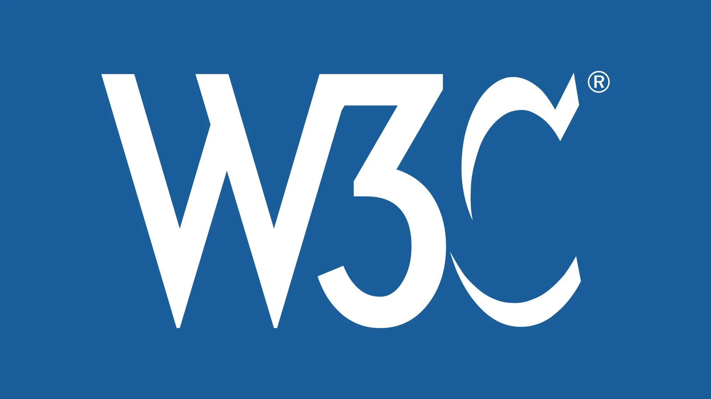

O World Wide Web Consortium (W3C) é uma organização internacional sem fins lucrativos de interesse público, onde organizações membros, uma equipe permanente e o público trabalham juntos para desenvolver padrões da web.
A principal razão pela qual o W3C define padrões é para garantir o crescimento contínuo e o funcionamento harmonioso da web a longo prazo, com preucupações como acessibilidade universal, interoperabilidade, segurança e privacidade na web e inovação.
